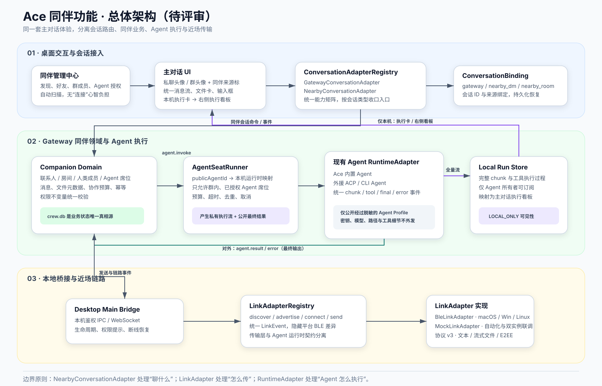

私聊、群聊统一用协议 v3 信封；文件改成 offer/accept/chunk/complete 流式传输，避免主进程一次性 Base64 整包。
STATUS · 待 AHUAMAO 评审
VERSION · 0.1
2026-08-27
本轮未改业务代码
Ace“同伴”功能技术方案
本方案将现有 BLE 能力重构为可替换链路，把私聊和群聊接回主对话，并让 Ace 内置 Agent、通过外援连接的本地 Agent 都能以受控“群内席位”参与协作。
推荐采用“统一会话入口 + Gateway 同伴领域 + AgentSeatRunner + LinkAdapter”的四层方案。蓝牙与 ACP 都使用注册式 Adapter 结构，但保留不同接口，避免把传输层和 Agent 运行时揉在一起。
这是一份目标架构，不代表当前代码已经具备这些能力。确认后再进入代码改造；现有 Nearby BLE 文档仍描述当前实现。
Ace 内置 Agent 与 ACP/CLI 外援都映射为公开 Agent Profile，再由群内 Agent 席位绑定到本机 RuntimeAdapter。
自己 Agent 的完整执行流只落本机并进入右侧看板；其他成员只收到脱敏后的最终输出。
02 · 现状与需要解决的问题
现有功能链路已经能跑通，但模块边界仍围绕“BLE 页面”组织，和产品方案要求的“同伴页管理、主对话交流”存在差距。
| 现状 | 问题 | 目标调整 |
|---|---|---|
nearby/src/transport.rs 的 TransportBackend 只负责启动模式 | 无法表达发现、连接、发送、事件订阅等完整链路能力 | 升级为独立 LinkAdapter 契约，BLE 与 Mock 分别实现 |
nearby-chat.ts 自带消息区和输入区 | 形成第二套聊天 UI，后续附件、草稿、执行卡都要重复维护 | 同伴页只做关系与群管理，实际交流全部进入主对话 |
私聊存在 agent.request | 违背“人不能私聊 Agent”的产品硬规则 | Renderer 隐藏、Adapter 拒绝、Gateway 领域层再次拒绝 |
PeerInfo 只有单个 agent_name | 无法发现多个内置/外援 Agent，也没有公开信息与本地执行信息的隔离 | 引入可版本化 PublicAgentProfile[] 与本地映射表 |
| 群文件走完整 Base64 命令 | 占内存、IPC 放大，失败后难续传；私聊文件能力也不完整 | 文件状态机 + 临时文件 + 分块校验，DM 和 Room 共用 |
| Rust JSON 同时承载历史与连接恢复 | 业务状态分散，主对话 Session 无法成为统一历史入口 | crew.db 保存领域状态；Rust 只保留链路缓存与未确认出站队列 |
03 · 总体架构

1
同伴页与主对话分工
同伴页负责发现、人际关系、Agent 名片、群成员和授权；点击“私聊本人/进入群聊”后解析一个 ConversationBinding，并交给主对话。
2
会话 Adapter 决定“聊什么”
GatewayConversationAdapter 服务普通 Ace 会话；NearbyConversationAdapter 服务同伴私聊和群聊。主对话不直接识别 BLE 指令。
3
LinkAdapter 决定“怎么传”
BLE、Mock 只提供发现、广播、连接、发送与事件。未来增加局域网或其他近场链路时，不需要改变同伴领域和 UI。
4
RuntimeAdapter 决定“Agent 怎么执行”
AgentSeatRunner 复用现有 RuntimeAdapter 体系执行 Ace 内置、ACP 或 CLI Agent；LinkAdapter 不实现 RuntimeAdapter。
04 · Adapter 契约设计
4.1 主对话 ConversationAdapter
type ConversationBinding =
| { kind: 'gateway'; sessionId: string }
| { kind: 'nearby_dm'; sessionId: string; peerId: string }
| { kind: 'nearby_room'; sessionId: string; roomId: string };
interface ConversationCapabilities {
canSendText: boolean;
canAttach: boolean;
canMentionPeople: boolean;
canMentionAgents: boolean;
showModelPicker: boolean;
showSkills: boolean;
showPlanMode: boolean;
}
interface ConversationAdapter {
load(binding, cursor?): Promise<ConversationPage>;
sendText(binding, draft): Promise<SendReceipt>;
sendFile(binding, file): Promise<TransferReceipt>;
subscribe(binding, onEvent): Unsubscribe;
capabilities(binding): ConversationCapabilities;
}能力矩阵由 Adapter 提供，Composer 不散落 if (nearby) 判断。nearby_dm 固定关闭 Agent 候选、模型、Skills 和计划模式；nearby_room 只开放本群有效 Agent 席位。
4.2 Rust LinkAdapter
#[async_trait]
pub trait LinkAdapter: Send + Sync {
async fn start(&self, config: LinkConfig) -> Result<()>;
async fn set_discoverable(&self, enabled: bool) -> Result<()>;
async fn set_discovery(&self, enabled: bool) -> Result<()>;
async fn connect(&self, peer: LinkPeerId) -> Result<LinkSessionId>;
async fn send(&self, session: LinkSessionId, frame: Bytes) -> Result<SendAck>;
fn events(&self) -> LinkEventStream;
async fn shutdown(&self) -> Result<()>;
}| 实现 | 职责 | 不负责 |
|---|---|---|
BleLinkAdapter | 平台 BLE 权限、发现、GATT 会话、MTU 分片、重连与链路事件 | 好友关系、房间规则、Agent 选择、消息历史 |
MockLinkAdapter | 可控发现、丢包/乱序/断线注入、双实例联调 | 生产身份与权限 |
LinkAdapterRegistry | 按配置注册实现、管理生命周期、输出统一事件 | 运行 Agent |
这与 ACP 的结构思想一致：都通过稳定契约和 Registry 隔离实现；但接口不能共用，因为 ACP 是 Agent 运行时协议，BLE 是字节链路。
05 · 同伴领域与数据模型
建议在 Gateway 新增 companion 领域模块作为业务状态唯一真相源。Desktop Main 只负责把本机 Gateway 和 Rust LinkAdapter 安全地桥接起来。
| 实体 | 关键字段 | 约束 |
|---|---|---|
companion_peers | peer_id、identity_fingerprint、display_name、avatar、relationship、last_seen | 关系只属于人，不属于 Agent |
conversation_bindings | session_id、kind、target_id、revision | 一个 DM/Room 稳定映射到一个主对话 Session |
companion_rooms | room_id、name、owner_peer_id、revision、content_key_version | 成员变更使用单调 revision |
companion_room_members | room_id、member_type、member_id、owner_peer_id、state | Agent 必须指向仍在群的人类 owner |
companion_agent_profiles | public_agent_id、owner_peer_id、display_name、kind、capabilities、revision | 公开 ID 与本地 Runtime ID 分离 |
companion_messages | message_id、conversation_id、sender、kind、visibility、payload、delivery_state | event_id 幂等，消息不可触发隐式 Agent 互唤 |
companion_agent_runs | run_id、room_id、seat_id、source_message_id、owner_peer_id、status、result_message_id | 完整执行流仅所有者可读 |
领域不变量
- DM 只能包含两个人类身份；任何
agent.invoke在 Gateway 领域层硬拒绝。 - Agent 只能作为显式
agent_seat存在于群中，不能成为好友、DM 成员或独立连接对象。 - 添加 Agent 时，Agent 所有者必须已在群，并且只能由所有者授权自己的 Agent。
- 所有者退出、被移除或撤权时，其 Agent 席位立即失效，进行中的任务进入
paused_owner_left。 - 普通 Agent 输出中的文本
@只作为文本展示；只有结构化协作事件才能继续唤醒其他 Agent。
06 · Nearby 协议 v3
现有 v2 不能表达多 Agent Profile、显式 Agent 席位、DM 文件状态机和执行可见性，因此建议升级 v3。v2 节点只能进入“兼容私聊文本”模式，不允许加入带 Agent 的 v3 群。
| 消息族 | 事件 | 说明 |
|---|---|---|
| 身份与资料 | profile.snapshot / profile.updated | 人类公开资料与多个脱敏 Agent Profile，带 revision |
| 关系 | contact.invite / accept / reject / block | 建立在人与人之间 |
| 消息 | chat.message / chat.receipt | 用 conversation kind 区分 DM 和 Room |
| 文件 | file.offer / accept / chunk / complete / cancel | 私聊与群聊共用；SHA-256 校验；首版上限 4 MiB |
| 群成员 | room.member.add / remove | 只操作人类成员 |
| Agent 席位 | room.agent_seat.grant / revoke | 携带 owner、profile revision 与权限摘要 |
| Agent 调用 | agent.invoke / result / error | 仅 Room；链路只承载最终结果，不承载内部 chunk |
| 有界协作 | collab.create / step / finish / cancel | 默认 3 轮、最多 8 次 Agent 发言，并设置 deadline |
所有信封统一携带 protocol_version、event_id、sender_peer_id、conversation、created_at、counter、payload。群状态事件另带 room_revision，接收端拒绝旧 revision 和重复 event。
文件传输状态机
- Offer名称、大小、MIME、SHA-256，不读完整文件进内存
- Accept接收端检查空间和策略，创建临时文件
- Chunk按 offset 写入；每块确认，可断点恢复
- Complete验证大小与摘要，原子移动到正式路径
- Receipt更新主对话文件卡状态，失败可重试
07 · Ace 与外援 Agent 的发现和接入
发现的是“可公开的 Agent 名片”，不是本机 Runtime 的原始配置。每个 Profile 在本机保存一条私有映射：public_agent_id → builtin/runtime_adapter + local_agent_id。
| 公开给附近同伴 | 永不公开 |
|---|---|
| 公开 Agent ID、显示名、头像、主人、能力描述、类型徽标（Ace/外援）、可用状态、资料 revision | 供应商密钥、模型名、系统提示、工作目录、外援进程参数、工具调用细节、本地数据库 ID |
| 授权结果摘要：可加入哪些共同群、纯文本/工具需审批 | 具体白名单内部结构、审批历史、文件路径、环境变量 |
- Ace 默认只发布一个内置 Agent 名片；用户可关闭公开。
- ACP/CLI 外援默认不公开，用户在“我的 Agent 名片”中逐个开启，并填写面向他人的能力描述。
- 加入群不等于可执行工具。Agent 席位只开放文本响应，工具仍按群级白名单和本机审批执行。
- 外援断开时 Profile 保留但状态变为不可用；群历史和 Agent 席位不被删除。
08 · 群聊中的执行过程可见性
一个 Agent 运行产生两条投影：本机私有执行流进入执行卡与右侧看板；群内公开结果只包含最终文本、失败摘要和必要文件。
| 内容 | Agent 所有者 | 其他群成员 | 是否通过 BLE |
|---|---|---|---|
| 排队 / 执行中状态 | 可见 | 可见简化状态 | 是，状态事件 |
| 模型增量 chunk | 可见 | 不可见 | 否 |
| 工具名、参数、审批、命令输出 | 按普通 Agent 会话规则可见 | 不可见 | 否 |
| 本地路径、模型、Token/成本细节 | 按本机设置可见 | 不可见 | 否 |
| 最终回答 | 可见 | 可见 | 是，agent.result |
| 失败 | 完整本地错误 | 安全化失败摘要 | 是，agent.error |
主对话中的本机执行卡
群消息流插入一张本地投影卡，字段包括 run_id、source_message_id、agent_seat_id、状态、耗时和最终结果状态。点击卡片后，右侧看板复用普通 Agent 会话的 chunk 渲染、工具卡和审批 UI。卡本身可以存在于本机 Session 历史，但标记为 LOCAL_ONLY，不得进入 Nearby 出站队列。
远端 Agent 的运行只渲染普通“Agent 正在处理”占位和最终消息，不生成可点击执行卡，因为本机没有也不应拥有它的执行记录。
09 · 关键消息流
9.1 人与人私聊
- 主对话发送NearbyConversationAdapter 校验 nearby_dm 能力
- Gateway 落库生成 event_id，状态为 queued
- Link 发送Desktop Bridge → BLE，加密并分帧
- 对端入库幂等检查，写入同一 DM Session
- 回执更新queued → sent → delivered；离线保留草稿/重试
如果 payload 包含 Agent invoke，ConversationAdapter 和 Gateway 都拒绝，并返回“请创建有主人的群聊”。
9.2 群内调用本机 Agent
- 接收 @验证 room revision、成员身份和 Agent 席位
- 创建 Run建立本机私有 child run，关联来源群消息
- 执行 RuntimeAce/ACP/CLI 输出统一 RuntimeEvent 流
- 本机投影完整事件进入执行卡与右侧看板
- 公开结果仅最终结果经 Gateway 脱敏后发回群
9.3 多 Agent 有界协作
协调器生成结构化 collab.step，每一步明确目标 Agent、输入摘要、round、speech_index 和 deadline。每台设备在执行前重新校验主人仍在群、席位仍有效、预算未超限。Agent 结果中的普通文本 @ 不会自动创建下一步，从协议层阻断无限互唤。
10 · 对用户更好上手的收口方案
| 场景 | 用户看到的方案 | 技术支撑 |
|---|---|---|
| 进入同伴页 | 自动扫描；只显示“附近/较近/信号较弱”，不显示 UUID、RSSI 和协议版本 | LinkEvent 映射为产品级距离状态；详细信息只进诊断 |
| 发起私聊 | 点击人物“私聊本人”回到主对话；标题显示“名字 · 同伴本人”，并明确不会调用随行 Agent | 稳定 nearby_dm ConversationBinding |
| 进入群聊 | 群头像 + 同伴群聊标识；@ 候选分“人/Agent”，Agent 行显示主人 | 会话能力矩阵 + 有效 Agent 席位查询 |
| 需要 Agent | 私聊不出现 Agent；提供“一起建群”的明确下一步 | UI、Adapter、领域三重硬限制 |
| 对方离线 | 历史可读、草稿保留、发送按钮显示等待连接，不伪装已发送 | 出站队列与 delivery_state |
| 本机 Agent 执行 | 群里看到紧凑执行卡；点击在右侧看板查看普通 Agent 的完整过程 | LOCAL_ONLY Run Projection |
| 蓝牙异常 | 只在失败时显示平台对应修复动作 | LinkError 统一错误码 + 平台 repair action |
11 · 安全、隐私与跨平台
正式发布阻断项：现有 peer_token 不能当作身份认证或端到端加密。真实工作内容上线前应完成认证加密；否则只能以“可信近距离 Beta”提供，并明确风险。
11.1 建议的链路安全
- 每台设备生成持久 X25519 静态身份密钥，私钥进入系统安全存储；首次配对使用 Noise XX 建立认证会话。
- 双方展示由握手 transcript 派生的短验证码，用户确认后保存对端 fingerprint，后续密钥变化必须重新确认。
- 消息使用 AEAD、单调 counter 和重放窗口；文件使用独立内容密钥。
- 群使用版本化 content key，并为每个成员单独封装；成员加入、退出或被移除后轮换密钥。
- 日志默认不记录明文消息、文件内容、Agent prompt、工具参数和密钥材料。
11.2 跨平台注意项
| 平台 | 实现注意 | 必须验证 |
|---|---|---|
| macOS | CoreBluetooth 权限与 plist 文案；扫描/广播状态切换；应用休眠恢复 | 首次授权、拒绝后恢复、双机互连、长文件传输 |
| Windows | WinRT GATT 回调不可阻塞；CCCD/Notify 失败清理；蓝牙适配器状态变化 | 重复连接争用、Notify 重试、休眠唤醒、路径与文件名 |
| Linux | BlueZ/DBus 权限与发行版差异；当前 Peripheral 支持边界需要真实环境确认 | Ubuntu 主验证矩阵、无图形权限提示、BlueZ 重启恢复 |
跨平台实现不能只以编译通过为完成标准。BLE、文件名、临时目录、密钥存储和休眠恢复都需要真实设备矩阵。
12 · 分阶段实施与验收
P0
契约与主对话接入
先完成ConversationBinding/Adapter、LinkAdapter、同伴 Hub 收口、DM Agent 三重拦截；保留现有文本链路。
P1
消息与流式文件
可独立验收协议 v3 信封、DM/Room 共用文件状态机、出站队列、回执和失败恢复。
P2
Agent Profile 与群内席位
安全规则Ace/ACP/CLI 公开资料、群级授权、主人离群级联、工具审批边界。
P3
本机执行看板
隐私验收Local Run Store、执行卡、主对话右侧看板；验证 BLE 永远收不到内部事件。
P4
有界多 Agent 协作
预算验收结构化调度、轮次/次数/deadline、取消与主人离群暂停。
P5
E2EE 与跨平台发布
发布门槛Noise 会话、群密钥轮换、密钥存储、macOS/Windows/Linux 真实设备矩阵。
测试层级
- 领域单测：DM Agent 拒绝、主人离群级联、Agent 授权、revision、幂等和协作预算。
- 协议性质测试：分帧/乱序/重复/损坏、文件摘要、重放窗口、v2/v3 协商。
- Mock 双实例集成：好友、DM、群聊、文件、Agent 结果、断线恢复。
- 隐私测试：抓取 Desktop↔Rust IPC 和 BLE frame，断言不存在 chunk、工具参数、路径和模型信息。
- UI E2E：同伴 Hub 跳主对话、头像与来源标识、能力矩阵、执行卡右侧看板。
- 硬件矩阵：macOS↔macOS、Windows↔Windows、macOS↔Windows、Linux 组合与休眠恢复。
13 · 实施记录（2026-08-27）
本轮已完成：同伴领域服务、稳定 ConversationBinding、默认“同伴空间”、Agent 公开范围、BLE LinkAdapter、协议 v3 Agent 名片、主对话 ConversationAdapter、DM/Room 文本与文件传输，以及按产品 UI 稿重做的同伴管理中枢。
UI 收口
- 删除旧 Nearby 页中的第二套消息流、输入框、雷达和大页面标题；同伴页只负责发现、人物资料、群管理和“我的名片”。
- “私聊本人”和“进入群聊”先展示真实工作空间选择器，默认选中“同伴空间”，确认后切换到主对话；私聊标题带“同伴本人”标识。
- 发现页一次聚焦一张人物/随行 Agent 名片；建群第一步只选择人和群名，不自动添加任何 Agent。
- 个人页列出 Crew 与本机外援 Agent，Crew 首次默认公开，后续完全尊重用户保存的公开范围。
- 私聊仅在对方已连接时开放；群聊至少一位远端成员在线才能进入。离线资料和历史仍可查看，但按钮、主对话适配器与 Gateway 三层都会拒绝发送。
可插拔边界
LinkAdapter只负责 BLE/Mock 链路；同伴关系、会话绑定、Agent 名片、Outbox 与 Local Run 由 Gateway/CompanionService 管理。ConversationAdapter把同伴会话接入主对话发送链，复用主对话附件、历史、Agent 执行过程和右侧看板。- 文件在 Gateway 中校验当前账号 uploads 路径与 4 MiB 上限，链路使用统一分片函数；DM 使用
peer.file，群聊使用room.file。
完整测试结果见同目录 companion-test-report.html。正式发布前仍以 E2EE 与真实蓝牙设备矩阵为阻断项。
14 · 已确认的 6 个决策
产品确认结果
- 是否同意蓝牙采用独立
LinkAdapter，结构上与 ACP 一样注册化，但不共用 RuntimeAdapter 接口？ - 是否同意把同伴业务状态统一收口到 Gateway/crew.db，Rust 只保留链路与恢复缓存？
- 是否同意 Ace 内置 Agent 默认可发布名片、ACP/CLI 外援默认逐个手动公开？
- 是否同意 Agent 只作为“群内席位”，并由所有者按群授权，主人离群自动撤销？
- 是否同意自己 Agent 的执行卡和完整过程仅本机可见，群内其他人只收到最终输出？
- 是否把 E2EE 设为正式发布门槛；未完成前只允许可信近距离 Beta？
以上决策已进入实现；后续变更需要同时更新领域约束、Link/Conversation Adapter 能力矩阵和对应测试。